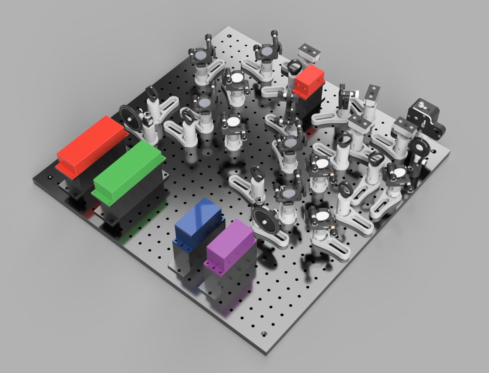

Description

The Excitation module is capable, in its base form, of providing illumination for simultaneous 2 channel and sequential 4 channel microscopy. This is achieved by its 4 lasers (405nm, 488nm, 561nm, 642nm). The Lasers range in maximum power from 100mW to 1W and follow an open beam path from source to sample for greater efficiency.
The two longer wavelength lasers are fiber lasers which require approximately 30 minutes from turning on to reach maximum stability. Hence these are not suited to switching on and off during an experiment. This causes a problem for multi-colour imaging where the microscope will need to repeatedly alternate between excitation lasers. To circumvent this issue these two lasers are passed through an AOTF (Acousto-OpticalTunable Filter) which allows for microsecond selection of any combination and power of these lasers.
The two shorter wavelength lasers are diode lasers and are capable of rapid switching. Because of this, and to maintain simplicity, these two lasers are not passed through the AOTF. The shutter at the exit of the module has millisecond responses and provides control over the excitation as a whole to enable complex experiments like time-lapses to be taken.
Each laser pathway contains a mirror pair to allow for simple alignment and are kept on axis wherever possible, once again, for simplicity.

Parts
Construction
👁 View CAD Design Online 👁
I found using M6 to M4 adapter screws very useful to mark positions on the breadboard before starting construction and as centering pins for components.
The module can be built by following the 3D designs. Alignment can be conducted using the standard 2 pinhole technique and each laser path includes an adjustable mirror pair to facilitate this.
The 3d printable diode laser mounts are provided as a convenience for rapid set up but cause overheating if used for extended periods or at much more than minimum power. The Aluminium mounts should be used once this is required. The fiber lasers do not produce as much heat and so can use the 3d printed mounts perminantly.